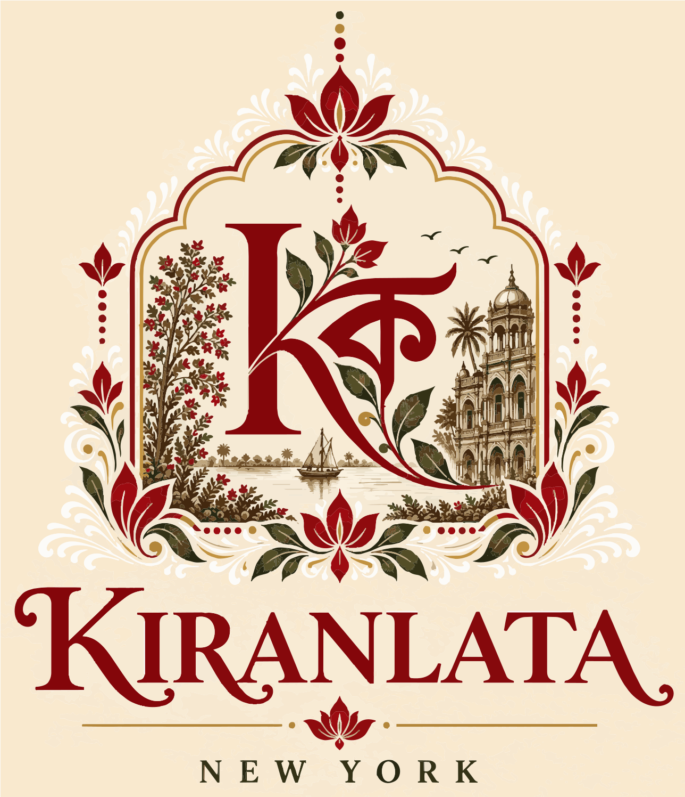
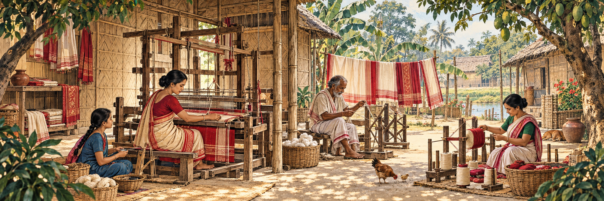
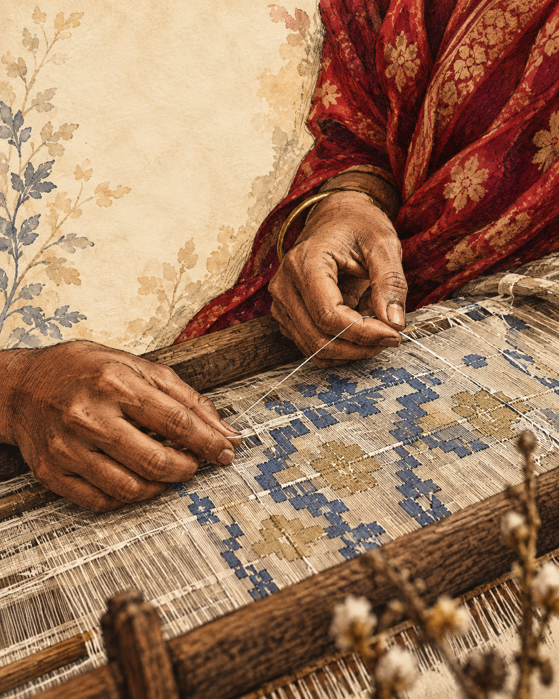
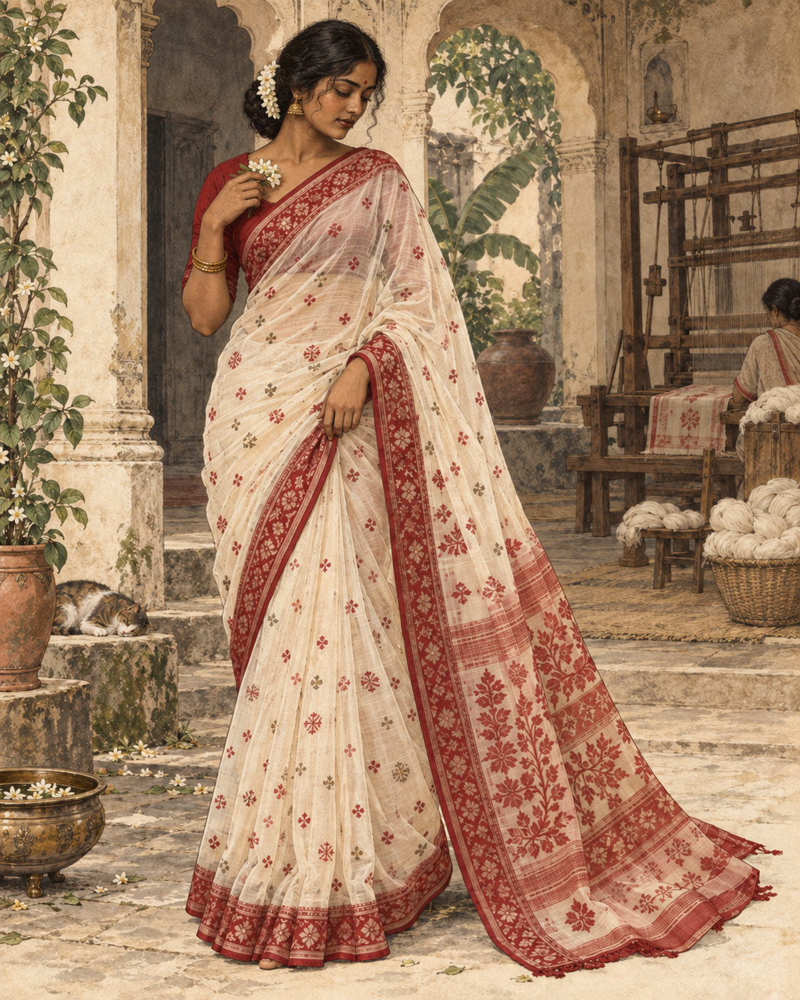

Handloom,
always
Woven by artisans on traditional looms, with the beautiful irregularity of the human hand.


From the looms of India & Bangladesh · To New York
Kiranlata brings distinctive handloom sarees—and the human stories within them—to women across the United States.
The Kiranlata promise
Not hundreds of designs. Small, carefully considered collections, where every saree has its own character and every thread can be traced back to craft.
Woven by artisans on traditional looms, with the beautiful irregularity of the human hand.
Breathable cotton and luminous silk. Never synthetic fibers.
Distinctive pieces selected for their technique, provenance and quiet character.
To be worn, loved, remembered—and one day passed into another pair of hands.

Each motif, placed by handThe slow intelligence of hands
A handloom saree begins with rhythm: warp held taut, shuttle passing, motifs counted thread by thread. It carries the time, knowledge and touch of the person who made it.
We work to connect that living tradition with the woman who will give the saree its next chapter.
Why handloom mattersSmall-batch seasonal edits
Our first collection is taking shape. These are the textile traditions at the heart of Kiranlata.

01 / 03HandloomPoetry in extra weft
Featherlight cotton, with motifs introduced one patient thread at a time. A storied Bengal weave that rewards a closer look.
Join the first look ↗A boutique between two worlds
“Heritage is not kept behind glass. It is worn, loved, and lived in.”
Kiranlata is a New York-based, thoughtfully curated saree boutique bringing distinctive handloom and artisanal sarees from India and Bangladesh to women across the United States.
We believe a saree can hold a place, a maker, a memory—and still feel entirely your own. Our collections stay small so every piece can be known and chosen with care.
The first collection is coming
Join us for first access to small handloom releases, private previews and personal saree guidance from New York.
Begin an enquiry ↗